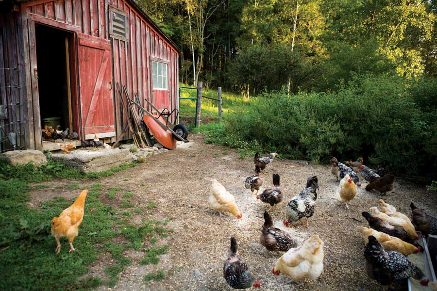

Safe Mosquito And Tick Control: Raise Chickens, Guineas Or Ducks
These reader reports tell how you can control ticks, mosquitoes and more by raising chickens, guineas or ducks.
By Mother Earth News readers
June/July 2009
Chickens and other poultry are a wonderful addition to any backyard or homestead. They’re entertaining, easy-to-care-for pets, and they provide flavorful, nutritious eggs. Plus, the nitrogen-rich droppings they produce will help your garden flourish (after some time composting). But poultry have another advantage that’s often overlooked - they can provide outstanding tick and mosquito control and have voracious appetites for slugs, snails and other pests. They even eat mice and snakes sometimes!
We’ve been collecting readers’ Poultry Pest Patrol reports for several years, and your latest reports are presented below. Read more amazing accounts about how poultry can control ticks, mosquitoes and many other pests, or share your own experiences at the Mother Earth News Poultry Pest Patrol Page.
Farewell to Ticks and Flies
Last summer, I pulled at least a dozen ticks every night when I took my dog in the house. Then I got 200 chicks in two batches: the meat birds first, then the egg breeds. Within two weeks of letting the chicks out of the brooder, the ticks were gone, and we had few flies or any other type of bug.
The first set of birds did swimmingly. I trained them to come when called by throwing scratch on the ground. I started using the feed to lead them out to the woods, where I knew there was a lot to eat.
The second batch didn’t fare as well. (The first batch had eaten all the close-in feed and the second batch was too small to go too far.) When I do it again, I’ll have a much larger brooder and brood all the chicks at once.
Evelyn Hansen
central Missouri
All My Heroes Are Chickens
I love my chickens! They control all manner of pests, from grasshoppers to scorpions, centipedes to black widow spiders - even mice! Whenever we clean up the backyard, we invite the chickens. Every trough, board and boulder that’s flipped over is followed by chickens ready to attack those big, scary and creepy things. Call me crazy, but my hens are my heroes. And I’m not eggsaggerating!
Tina Yarbrough
central Arizona
Market Garden Organic Pest Control
We have a five-acre market garden coexisting with 36 free-range chickens. (Their beautiful eggs are a fantastic hit at market!) In addition to the pleasure of their company, the chickens provide us with excellent mosquito control and the greenest lawn in the neighborhood. We also see the occasional chicken running from the flock with a small snake dangling from its beak.
Our garden is not fenced and the chickens roam it freely. There will be an occasional peck in a pepper or tomato, but the only real problem has been with Thai hot half-inch peppers - the chickens will totally strip the plants of peppers unless they’re protected.
I’m not quite sure what else they are eating in the garden, but we have few grasshoppers or caterpillars. When we plow or till, the chickens follow behind to feast on the insects that have been turned up.
We also leave a chicken-sized opening in the fence around our 7-foot-by-17-foot compost heap, and the chickens thoroughly work it over for us.
Karen Moore
Adrian, Michigan
Cricket Control
We have a small farm with what seemed like millions of crickets. At times, the garden was black with them - especially in July and August. For a few years, I had been purchasing hundreds of dollars worth of every cricket-killing pesticide we could find, all to no avail.
We decided to try a few chickens and so we ordered 10 20-week-old Rhode Island reds in the spring of 2005. They foraged heartily, and by October the chickens had developed a daily cricket route that scratched out almost every covert cricket on the farm. Our initial concern had been cricket control, but other bugs also have been seriously reduced since 2005.
David Lindsay
Val Caron, Ontario
Foragers for Fly Larvae
We started out on our new farm with about 50 chicks, 25 keets (day-old guinea fowl) and 15 turkey poults. They ate anything that moved. As they grew to free-range size, they fanned out over our 10 acres and continued to eat everything that moved slower than they did. Eventually we had almost no bugs left on the property, and the ticks that infested every shrub and blade of grass were gone.
The guineas were well-behaved, but the chickens were destructive to all my flower beds - and gardening became impossible. We fenced in the chickens to confine them to the barn and pastures (using a lot of goat wire fencing, which we needed for the eventual arrival of the goats), and let the guineas range the yard and unfenced areas. The chickens help with fly control because they scratch through all the llama and goat poop in the barnyard and pastures to eat the fly larvae.
Linda Stevens
Marshall, North Carolina
Natural Tick Control
We moved to a lowland place three years ago and had a major wood tick problem. We removed a number of ticks from our golden retriever, and after applying poison around the baseboard of the bathroom (which I don’t like to do), I collected seven to 10 dead ticks every day.
We had nine Orpington hens in a coop, and brooded a couple dozen Wyandottes in the barn that spring. When it came time to move the chicks to the coop, we allowed the older hens to range while the young chickens adjusted to the coop.
The second spring and summer, they all ranged and provided great tick control. I found a total of only three ticks in the house during that entire time (no poison required). The dog had no ticks. I mentioned this to a neighbor, who said he had no problem with ticks the previous year. Then it dawned on me - his tick control method was coming from chickens and guineas he had ranging freely all the time.
Ducks Manage More Than Pond Pests
Greedy for Grubs
Ducks are tireless consumers of slugs, snails, and a wide array of bothersome - and potentially dangerous - insects and grubs, including (but not limited to) mosquito pupae, Japanese beetle larvae, potato beetles and grasshoppers. In localities plagued by liver flukes, ducks can eliminate the problem by consuming the snails that are the intermediate host of this troublesome parasite of mammals. With the variety of diseases that mosquitoes can spread among avian and mammalian species, the duck’s ability to control mosquitoes at the non-feeding pupa stage is significant.
Dave Holderread
Holderread Waterfowl Farm & Preservation Center
Corvallis, Oregon
Ducks for Slug Control
Even if ducks did not lay eggs or provide endless amusement, they would be an asset in our garden. They spend their days patrolling for slugs and other small hindrances.
In the spring, summer and early fall when there are a lot of salad crops being planted, they must be fenced out of the vegetable garden. But if you can give them free rein of the perimeter, they will keep pests from creeping in. Later in the year, when most plants are full-grown, you can give them the run of the place, and they’ll clean it up with great thoroughness. In the orchard they make short work of insects such as plum curculio that fall to the ground.
Barbara Damrosch
Harborside, Maine
Muscovies Will Whack Wasps
Our Muscovy ducks are free-range and do an awesome job at controlling mosquitoes and flies. They also make a quick meal out of snakes, mice, wasps and hornets. I used to be stung by yellow jackets and bald face hornets three to five times during the year. Since we got the muscovies, I haven’t been stung in years.
Lisa Ohling
Lebanon, Oregon
Organic Pest Controllers from Birth
Our Muscovy ducklings just love mosquitoes. Young ducklings, from the second day of their lives, go after those bloodsuckers all day long. By the evening, the little ducklings are so stuffed they can hardly move.
Our yard is practically mosquito- and tick-free, without using chemicals. Grasshoppers also are a favorite snack - if the mother ducks don’t get them first.
Andy Tomsevics
Isanti, Minnesota
Ducks for Fly and Tick Control
I have three horses boarded on six acres. For years, I had a terrible problem with face flies, deer flies and ticks. We even had the 2-inch-long “horseflies” in huge numbers.
Then, someone gave me six Muscovy ducks. Those little ducklings would hang out in the horse stalls, snapping up every fly they could catch. They made a good-sized dent in the bug population. I haven’t had a tick on me since that year.
Also, we have had the West Nile virus break out in the horse population. I was fortunate to have my ducks on mosquito patrol until I could get my horses vaccinated.
Kathleen Callahan-Jordan
Radcliff, Kentucky
Ducks Dine on Termites
We had a huge termite swarm that collected on a downed pine tree. The Rouen ducks ate termites until they were stuffed. I’ve never seen ducks eat that much before or since.
Besides the usual bugs and small varmints, I’ve seen chickens eat little copperhead snakes.
Pete Medenwaldt
Birmingham, Alabama
|
DELLA CALFEE/GREEN STOCK MEDIA Chickens have a knack for scratching up food and seeing tiny bugs to eat. |
 JASON HOUSTON/GREEN STOCK MEDIA You might be surprised at all the pests chickens eat if they’re allowed to roam. (Chickens are not vegetarians!) |
DWIGHT KUHN Ducklings are irresistible! They’re easy to care for and consume lots of creepy critters you don’t want in your backyard. |
 ISTOCKPHOTO/CORNELIA PITHART Ducks and chickens love to sift through compost piles to search for bugs and worms to eat. |
ISTOCKPHOTO/JORY SHEPHERD Guineas are very alert and may be the first to warn ranging chickens of hawks overhead. |
JASON HOUSTON/GREEN STOCK MEDIA Chickens are beautiful and entertaining to watch as they peck and scratch for bugs and weed seeds. |